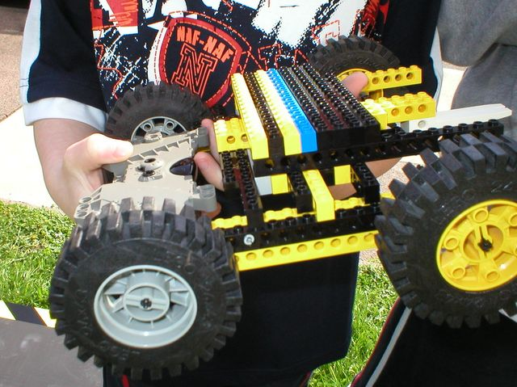

First |
Previous Picture |
Next Picture |
Last | Thumbnails
Close Up Of Danny & Gabriel Lego Technic Bot From the top - you can see that the large cluster of armour is only attached by a few studs. It is an easy target. The wheels are fairly good for their size, although I prefer balloon tyres.
